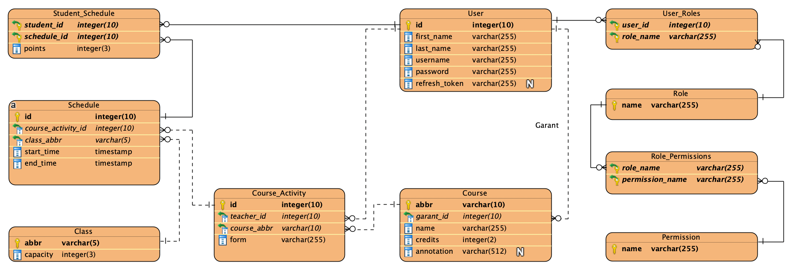

| Login | Heslo | Role |
|---|---|---|
| admin | password | ADMIN |
| john.smith | password | GUARANTOR |
| jane.doe | password | GUARANTOR |
| teacher.one | password | TEACHER |
| teacher.two | password | TEACHER |
| teacher.three | password | TEACHER |
| teacher.four | password | TEACHER |
| scheduler.one | password | SCHEDULER |
| student.one | password | STUDENT |
| student.two | password | STUDENT |
| student.three | password | STUDENT |
| student.four | password | STUDENT |
| student.five | password | STUDENT |
Pro implementaci backendu je používán framework napsaný v NodeJS s názvem NestJS a ORM knihovna TypeORM. Systémové entity jsou definovány pomocí tříd a dekoratérů, které specifikují konkrétní pole entit a jejich vlastnosti. Tyto entity jsou následně propojeny s databází pomocí TypeORM.
V rámci NestJS je možné vytvářet moduly pro každou entitu, což zlepšuje modularitu a přehlednost kódu. Každý modul se skládá ze dvou hlavních částí: servisu a kontroléru.
Tímto způsobem je dosaženo oddělení zodpovědností a strukturování kódu do modulů, což zvyšuje přehlednost, udržitelnost a efektivitu při vývoji.
K určení úrovní přístupu uživatelů se používá systém ABAC (Attribute based access control). Tento vzor má výhody oproti systému RBAC (Role based access control) díky své flexibilitě. Tato výhoda například umožnila snadno implementovat přístup garantů k editaci kurzů pouze v případě, že se ID garanta shoduje s ID uživatele, který požaduje úpravu.
Na základě role uživatele a jeho atributů je diferencován přístup k zdrojům a prováděno filtrování. Například, když student požaduje prvky rozvrhu, všechny prvky jsou filtrovány a vráceny jsou pouze ty, které jsou relevantní pro konkrétního studenta na základě jeho zápisu.
Rozvrh má 0 až N záznamů pro každou aktivitu kurzu. Každá aktivita kurzu může být opakovatelná v rozvrhu. K implementaci této funkce se používá pravidlo opakování ze standardu RFC5545. Tato funkce umožňuje nastavit flexibilní pravidla pro opakování určitého prvku rozvrhu.
Frontend aplikace využívá framework React a knihovny Material UI, react-query, DevExpress a query search.
Postgres byl vybrán jako databázový stroj, protože má všechny potřebné funkce pro realizaci projektu.
Databáze obsahuje celkem 13 entit, z nichž 5 slouží k definici vztahů typu ManyToMany, zatímco zbylých 8 entit představuje sémantické komponenty aplikace, jako jsou kurzy, uživatelé, třídy atd.
Použití databázových triggerů je zdůvodněno snahou udržet konzistenci dat v databázi. V případě výskytu chyby při provádění triggerů nedojde k modifikaci dat, která vyvolala spuštění triggerů. Tímto způsobem je zajištěna bezpečnost a integrita dat v případě nečekaných událostí.
Databázové triggery jsou implementovány k tomu, aby se předešlo nekonzistencím a udržela integrita dat. Při chybě v provedení triggeru zůstanou data nedotčena, což zabraňuje nežádoucím následkům. Tato opatření jsou klíčová pro zajištění spolehlivosti a stability aplikace pracující s danou databází.
Projekt se skládá ze tří vrstev (tier). První vrstvou je databáze. Druhou vrstvou je serverová vrstva (aplikační backend). Třetí vrstva je vrstva klienta (frontend aplikace).
Každá část (Tier) aplikace je připravena pro osobní použití pomocí docker kontejnerů.
Aplikace využívá tři kontejnery:
cd backenddocker-compose up -d --buildcd frontendyarncp .env.template .env (je potřeba zadat proměnné prostředí)yarn startKe spuštění databáze stačí zadat obraz aplikace. Když spustíte kontejner s databází, obsahuje již všechny potřebné migrace a také předdefinovaná data přidaná pro účely testování. Ke spuštění je třeba zadat obraz aplikace a také proměnné prostředí s daty pro připojení k databázi a parametry serveru pro aplikaci (datum vypršení platnosti tokenu, klíč generování tokenu atd.).
Chcete-li spustit frontend, musíte zadat obraz frontendu a také pomocí proměnné prostředí určit server backendu. Při použití jednoho souboru docker compose pro všechny tři části stačí zadat název kontejneru s backendem.
NodeJS >= v19.0.0yarn >= 1.22.19docker >= 4.0.0Všechny úkoly byly splněny.
Při vývoji aplikace jsme se snažili pokrýt všechny požadavky na backendu a případy použití na frontendu. Existuje však riziko neočekávaného chování.
Chyba by mohla narušit testování, úplně vypnout backend. Aplikace běží v systému Kubernetes s obrazy tří vrstev: databáze, frontendu a backendu. Restart kontejnerů umožňuje testování s dostupnými daty.
Pro restart kontejnerů je v horním pravém rohu frontendu tlačítko nastavení, které umožňuje resetovat s kontejnery i bez přihlášení. Tato metoda by měla vyřešit problémy během testování.